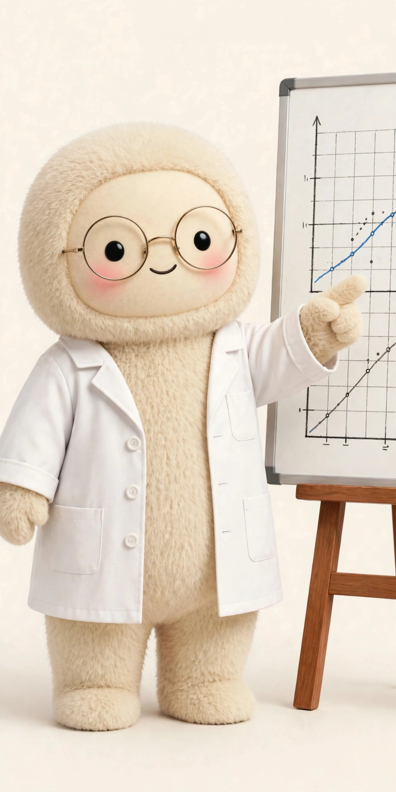

AIの定期実行と自動化 ― レポート自動作成と「放っておいても動く仕組み」
博士みゅうが担当するのは、仕組みの解説です。AIアシスタント活用の転換点は、「指示すると動くAI」から「放っておいても動く仕組み」に変わること。定期実行を設定すると、決めた時刻に決めた仕事をして、結果を届けてくれます。
定期実行で回っている実例
MUSE活用ラボの運営の現場では、毎朝のまとめ報告、SNS投稿の制作と投稿、サイトの更新、探しものの見張りなどが定期実行で回っています。このアカウントの毎日のリール投稿自体が、定期実行の実例です。人は「確認と判断」だけを担い、繰り返しの作業は仕組みに任せる形です。
データ集計とレポートの自動作成
公開されている活用事例では、売上データのファイルを集計・分析してグラフ付きレポートにまとめる、週次レポートを自動で作って届ける、といった使い方が広く紹介されています。最初は小さな定型作業（毎週の数字のまとめ等）から自動化すると、効果を確かめながら広げられます。
仕組み化のコツ
手順を言葉で渡し、結果は必ず人の目で確認する。自動化しても「確認と判断」は手放さないのが、失敗しない仕組み化の条件です。MUSE活用ラボでは、仕組みがどう動いているかも含めて、実例ベースで発信しています。
Museを始める方へ ― 招待コード：1908NH
入力場所は Instagram の固定投稿で案内しています
入力場所は Instagram の固定投稿で案内しています